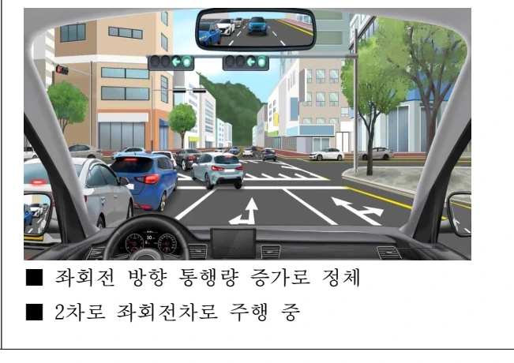

815. Which of the following are the TWO safest ways to turn left in the given situation?

- ①Enter the intersection quickly according to the green signal.
- ②Follow the vehicle in front closely.
- ③Since the left-turn lane is congested, use the third lane to turn left.
- ④Do not enter the intersection, as you may obstruct traffic by tailgating.
- ⑤Slow down in advance to prevent a rear-end collision, as there may be vehicles approaching from behind and trying to enter the intersection.
Show answer
Answer
④ Do not enter the intersection, as you may obstruct traffic by tailgating.
⑤ Slow down in advance to prevent a rear-end collision, as there may be vehicles approaching from behind and trying to enter the intersection.
Reference
Road Traffic Act Article 25: A driver must not enter a signal-controlled intersection if traffic ahead would force the vehicle or tram to stop inside the intersection, or beyond the stop line, and obstruct other vehicles or trams. Other drivers may also force their way in, so defensive driving, including reducing speed in advance, is necessary.
Reference text is a machine translation for study.